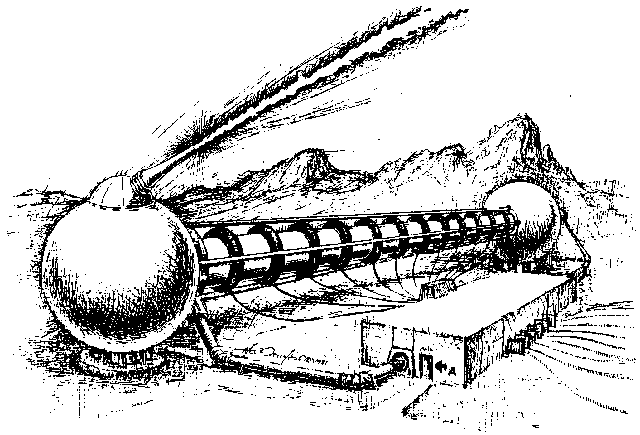
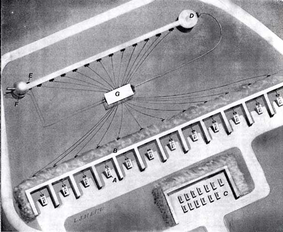
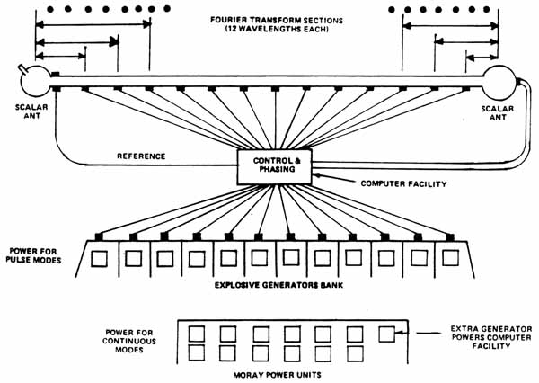
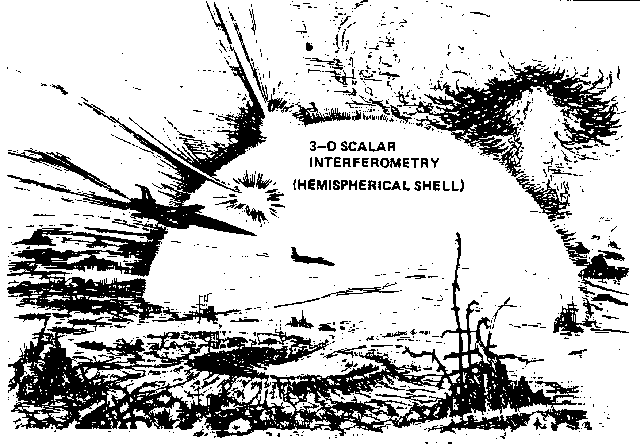
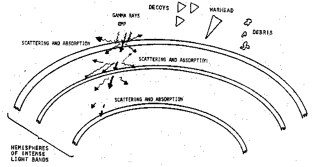
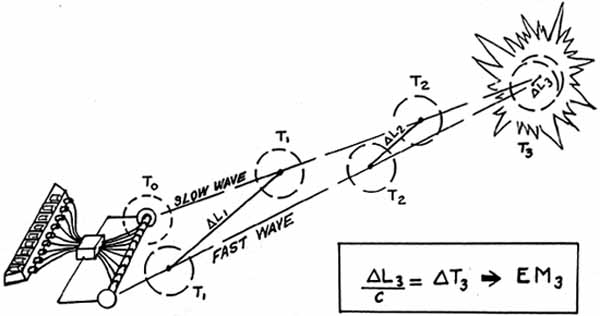
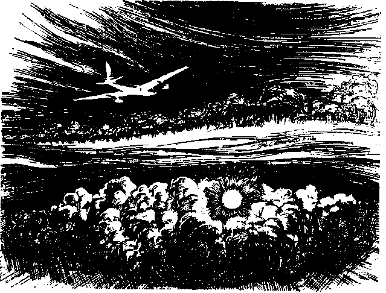
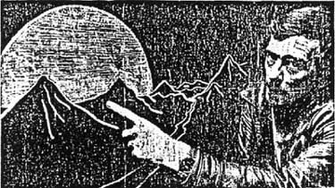
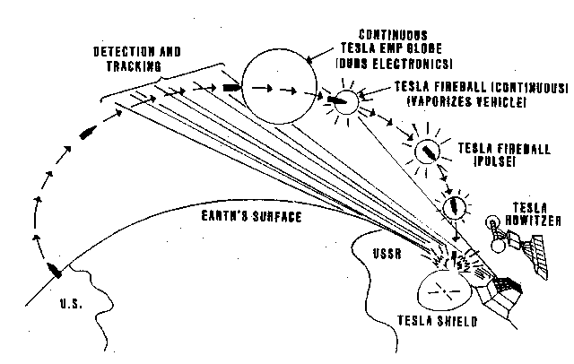
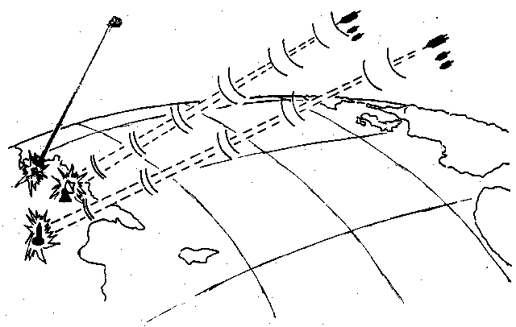

ORDER THE ALL NEW
2ND EDITION
OF "FER DE LANCE"
Updated to the year 2002
Stunning new revelations
about the secret scalar
EM wars the media ignores
THIS BOOK IS THE
ONLY SOURCE FOR
THIS INFORMATION
|
|
ORDER THE ALL NEW Stunning new revelations THIS BOOK IS THE |

|
Scalar Potential Interferometer Figure 6. Multimode Tesla Weapon In the 1930's Tesla announced other bizarre and terrible weapons: a death ray, a weapon to destroy hundreds or even thousands of aircraft at hundreds of miles range, and his ultimate weapon to end all war -- the Tesla shield, which nothing could penetrate. However, by this time no one any longer paid any real attention to the forgotten great genius. Tesla died in 1943 without ever revealing the secret of these great weapons and inventions. Unfortunately, today in 1981 the Soviet Union has long since discovered and weaponized the Tesla scalar wave effects. Here we only have time to detail the most powerful of these frightening Tesla weapons -- which Brezhnev undoubtedly was referring to in 1975 when the Soviet side at the SALT talks suddenly suggested limiting the development of new weapons "more frightening than the mind of man had imagined." One of these weapons is the Tesla howitzer recently completed at the Saryshagan missile range and presently considered to be either a high-energy laser or a particle beam weapon, (See Aviation Week & Space Technology, July 28, 1980, p. 48 for an artist's conception.) |

Aviation Week & Space Technology July 28, 1980

Figure 7. Tesla Weapons at Saryshagan
|
The Saryshagan howitzer actually is a huge Tesla scalar interferometer with four modes of operation. One continuous mode is the Tesla shield, which places a thin, impenetrable hemispherical shell of energy over a large defended area. The 3-dimensional shell is created by interfering two Fourier-expansion, 3-dimensional scalar hemispherical patterns in space so they pair-couple into a dome-like shell of intense, ordinary electromagnetic energy. The air molecules and atoms in the shell are totally ionized and thus highly excited, giving off intense, glowing light. Anything physical which hits the shell receives an enormous discharge of electrical energy and is instantly vaporized -- it goes pfft! like a bug hitting one of the electrical bug killers now so much in vogue. If several of these hemispherical shells are concentrically stacked, even the gamma radiation and EMP from a high altitude nuclear explosion above the stack cannot penetrate all the shells due to repetitive absorption and reradiation, and scattering in the layered plasmas. In the continuous shield mode, the Tesla interferometer is fed by a bank of Moray free energy generators, so that enormous energy is available in the shield. A diagram of the Saryshagan-type Tesla howitzer is shown in figure 7. Hal Crawford's fine drawing of the interferometer end of the Tesla howitzer is shown in figure 6. Hal's exceptional rendition of the Tesla shield produced by the howitzer is shown in figure 8. |

Figure 8. The Tesla Shield

|
Figure 9. Tesla Terminal Area Defense System In the pulse mode, a single intense 3-dimensional scalar phi-field pulse form is fired, using two truncated Fourier transforms, each involving several frequencies, to provide the proper 3-dimensional shape (Figure 10). This is why two scalar antennas separated by a baseline are required. After a time delay calculated for the particular target, a second and faster pulse form of the same shape is fired from the interferometer antennas. The second pulse overtakes the first, catching it over the target zone and pair-coupling with it to instantly form a violent EMP of ordinary vector (Hertzian) electromagnetic energy. There is thus no vector transmission loss between the howitzer and the burst. Further, the coupling time is extremely short, and the energy will appear sharply in an "electromagnetic pulse (EMP)" strikingly similar to the 2-pulsed EMP of a nuclear weapon. This type weapon is what actually caused the mysterious flashes off the southwest coast of Africa, picked up in 1979 and 1980 by Vela satellites. The second flash, e.g., was in the infrared only, with no visible spectrum. Nuclear flashes do not do that, and neither does superlightning, meteorite strikes, meteors, etc. In addition, one of the scientists at the Arecibo Ionospheric Observatory observed a gravitational wave disturbance -- signature of the truncated Fourier pattern and the time-squeezing effect of the Tesla potential wave -- traveling toward the vicinity of the explosion. |

|
TESLA HOWITZER |
Figure 10. "Nuclear" Flashes off the Coast of Africa

|
Lithuania - 10 Sep 1976 - British European Airways Flight #831 between Moscow and London CIA Report Released under FOIA Figure 11. Continuous Tesla Fireball The pulse mode may be fed from either Moray generators or -- if the Moray generators have suffered their anomalous "all fail" malfunction -- ordinary explosive generators. Thus the Tesla howitzer can always function in the pulse mode, but it will be limited in power if the Moray generators fail. In the continuous mode, two continuous scalar waves are emitted -- one faster than the other -- and they pair-couple into vector energy at the region where they approach an in-phase condition. In this mode, the energy in the distant "ball" or geometric region would appear continuously and be sustained -- and this is Tesla's secret of wireless transmission of energy at a distance without any losses. It is also the secret of a "continuous fireball" weapon capable of destroying hundreds of aircraft or missiles at a distance. An example of a Soviet test of this mode of operation is shown in figure 11. Witness to a super weapon?  Nick Downie describes the strange lurid glow that flared silently over the Hindu Kush THE SUNDAY TIMES, 17 AUGUST 1980 (Multiple incidents in Sept., 1979)
Figure 12. Tesla EMP Globe The volume of the Tesla fireball can be vastly expanded to yield a globe which will not vaporize physical vehicles but will deliver an EMP to them to dud their electronics. A test of this mode is shown in figure 12. (See also Gwynne Roberts, "Witness to a Super Weapon?", the London Sunday Times, 17 August 1980 for several other tests of this mode at Saryshagan, seen from Afghanistan by British TV cameraman and former War Correspondent Nick Downie.) If the Moray generators fail anomalously, then a continuous mode limited in power and range could conceivably be sustained by powering the interferometer from more conventional power-sources such as advanced magnetohydrodynamic generators. |
||||

Figure 13. Tesla ABM Defenses

|
Figure 14. Moray/Tesla Technology: Star Wars Now Typical strategic ABM uses of Tesla weapons are shown in figure 13. In addition, of course, smaller Tesla howitzer systems for anti-tactical ballistic missile defense of tactical troops and installations could be constituted of more conventional field missile systems using paired or triplet radars, of conventional external appearance, in a scalar interferometer mode. With Moray generators as power sources and multiply deployed reentry vehicles with scalar antennas and transmitters, ICBM reentry systems now can become long range "blasters" of the target areas, from thousands of kilometers distance (figure 14). Literally, "Star Wars" is liberated by the Tesla technology. And in air attack, jammers and ECM aircraft now become "Tesla blasters." With the Tesla technology, emitters become primary fighting components of stunning power. The potential peaceful implications of Tesla waves are also enormous. By utilizing the "time squeeze" effect, one can get antigravity, materialization and dematerialization, transmutation, and mindboggling medical benefits. One can also get subluminal and superluminal communication, see through the earth and through the ocean, etc. The new view of phi-field also provides a unified field theory, higher orders of reality, and a new super-relativity, but detailing these possibilities must wait for another book. With two cerebral brain halves, the human being also has a Tesla scalar interferometer between his ears. And since the brain and nervous system processes avalanche discharges, it can produce (and detect) scalar Tesla waves to at least a limited degree. Thus a human can sometimes produce anomalous spatiotemporal effects at a distance and through time. This provides an exact mechanism for psychokinesis, levitation, psychic healing, telepathy, precognition, postcognition, remote viewing, etc. It also provides a reason why an individual can detect a "stick" on a radionics or Hieronymus machine (which processes scalar waves), when ordinary detectors detect nothing. Unfortunately there is not room to develop the implications of this human Tesla interferometry in detail, for that must wait for yet another book, presently in its initial stages, that Hal Crawford and I are writing. Table 5. Orders of Reality
At the July 1981 U.S. Psychotronics Association's Annual Conference in
Dayton, Ohio, I presented the first rough paper on the Tesla secret and
scalar interferometry. A videotape of the presentation was made
and will shortly be available. I am also scheduled to make a
special presentation at the Alternate Energy Conference in Toronto,
Canada in latter October, 1981. A professional, videotaped
two-hour presentation on this subject is also being prepared. Wide
distribution of the material through the international underground
physics and technology network has already been made. This time,
God willing, Tesla's secret will not be suppressed for another 80 years! |